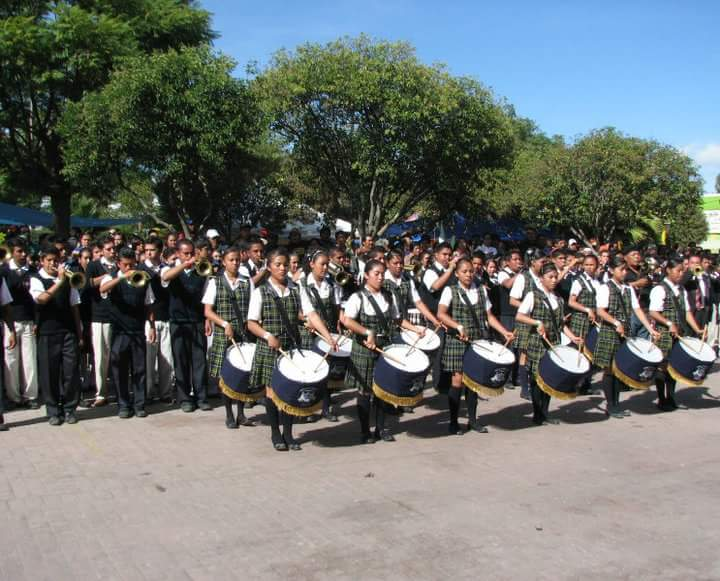
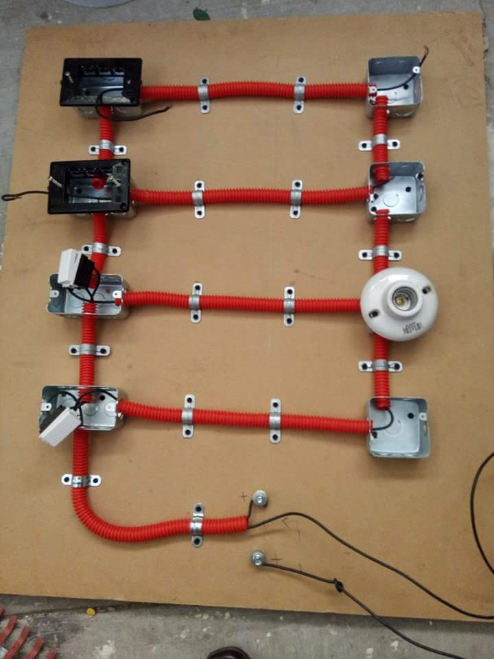
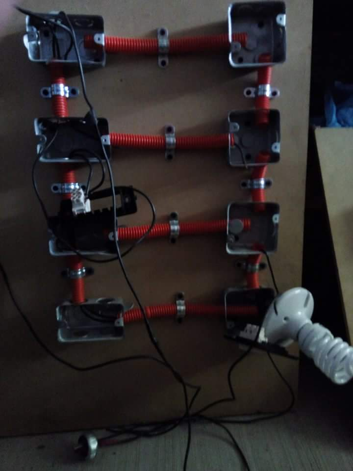
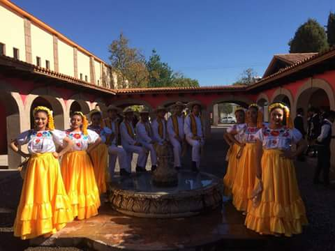
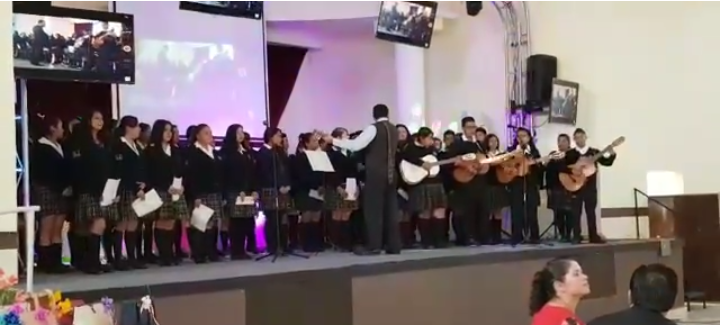

BANDA DE GUERRA
En este taller se desarrollan conocimientos y destrezas,que permiten a los alumnos ser mas responsables en todo lo que hagan.

Reconocida como una de las mejores,gracias a su gran desempeño en diferentes actos civicos.Cabe mencionar que esta banda de guerra esta conformada por alumnos de los diferentes grados que conforman el plantel.
ELECTRICIDAD
Este es un taller conformado actualmente por hombres y mujeres,encabezado por un profesor especializado para dicho taller,dentro de este se trabaja conexiones electricas de casa habitación,con realce en conexion en apagador sencillo o en escalera,conexiones de fotoceldas,conexion de acometidas,clac sobre amarres électricos,nomenclaturas,clasificación de awg en cable,tipos de tension,lectura de planos eléctricos,simbolo de guìas.

Y es asi como este taller puede ser de gran utilidad para los alumnos interesados en dicho tema,se tiene un horario de 3:10 pm-5:00pm en un dia asignado(Jueves)

DANZA
La danza es uno de los movimientos que nos ayudan a la expresion corporal,debido a que en ello manifestamos lo que sentimos

conocido como arte,bien una tradicion que en este plantel se dasarrolla con una amplia facilidad ya que contamos con un profesor que nos comparte los conocimientos que tiene sobre este bello arte
RONDALLA
Es un taller donde expresas las modalidades del canto y la habilidad de tocar un instrumento

Y es asi como este taller puede ser de gran utilidad para los alumnos interesados en dicho tema,se tiene un horario de 3:10 pm-4:00pm en un dia asignado(Lunes)conformado por hombres y mujeres